Jim Lahey's No Knead Bread
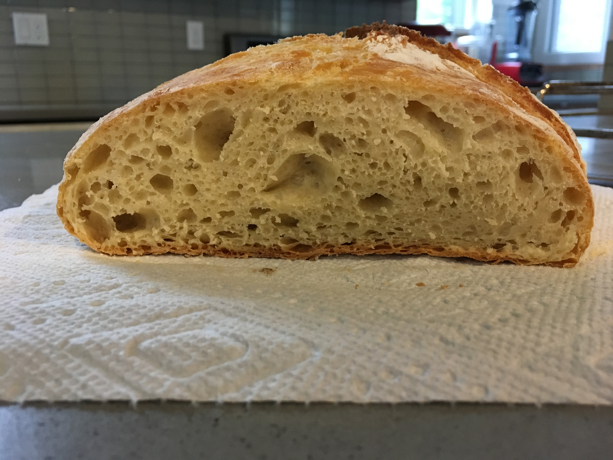If you haven't heard of No-Knead bread before, leave this page for a moment and do a quick Google search. This recipe has been popping up all over food blogs ever since Mark Bittman popularized it the Cooking section of the New York Times. Bittman gives a written recipe, a video with Jim Lahey demonstrating the process, a revised recipe after several years of fine-tuning, and even a revised video with new techniques.
The recipe I use is the most basic version and the only bread I've been able to bake successfully on multiple occasions.
Here's what you'll need:
- 3 cups all-purpose flour or bread flour
- 1.5 tsp salt
- 0.25 tsp quick-rise yeast
- 1.5 cups room-temperature water
- large mixing bowl with a cover (I use a plate)
- mixing spoon (or just use your hands!)
- large cast-iron dutch oven (or any heavy pot with a lid that can withstand a temperature of 450 degrees Fahrenheit)
- 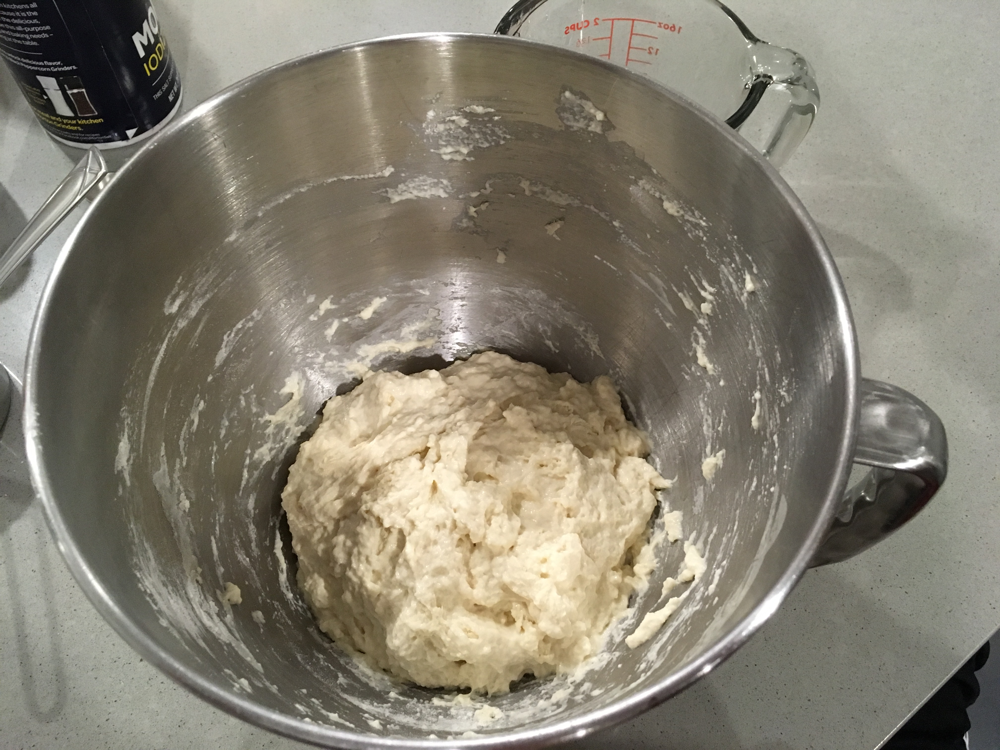Mix all the ingredients together in a bowl. This is called "No-Knead" for a reason, so don't worry too much about getting it uniform. As long as you don't see any dry flour spots you're good to go. Cover the dough in the bowl and let it sit for 12-18 hours (Jim Lahey says closer to 18 is better). I suggest mixing it up before bed so that the dough will be ready for dinner the next day.
- 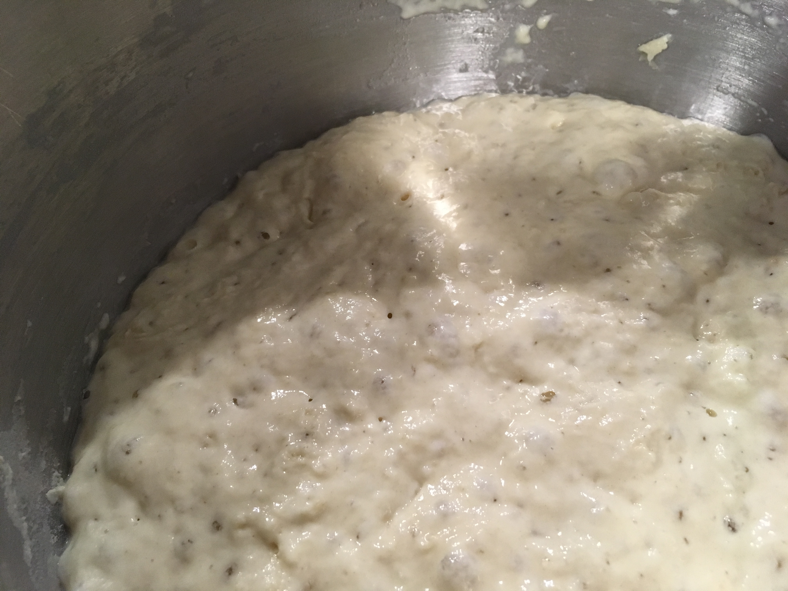 When you check the dough 18 hours later, it should have bubbles on the surface.
- 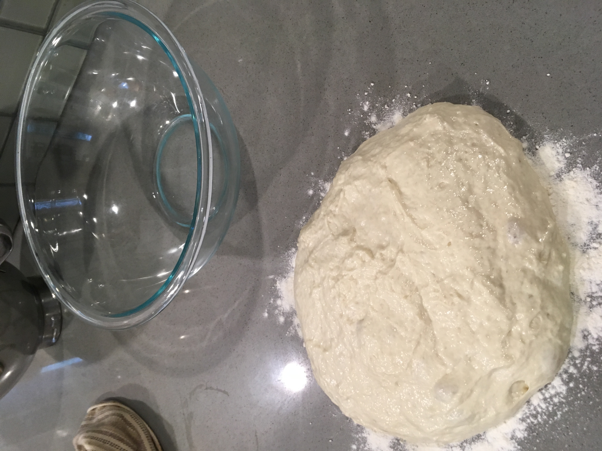 About 2 hours before you want the bread to be ready, pour the dough out of the bowl onto a floured countertop.
- 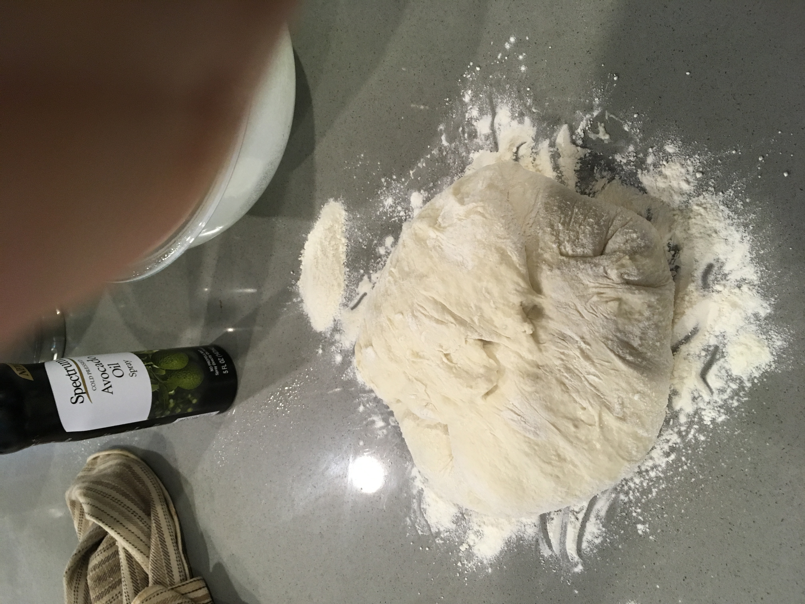 Fold over the edges of the dough (4 corners) to form a neat little bundle. Coat the inside of a large bowl with flour and put the dough bundle back in, seam side down. Cover and let the dough rise for another hour.
- 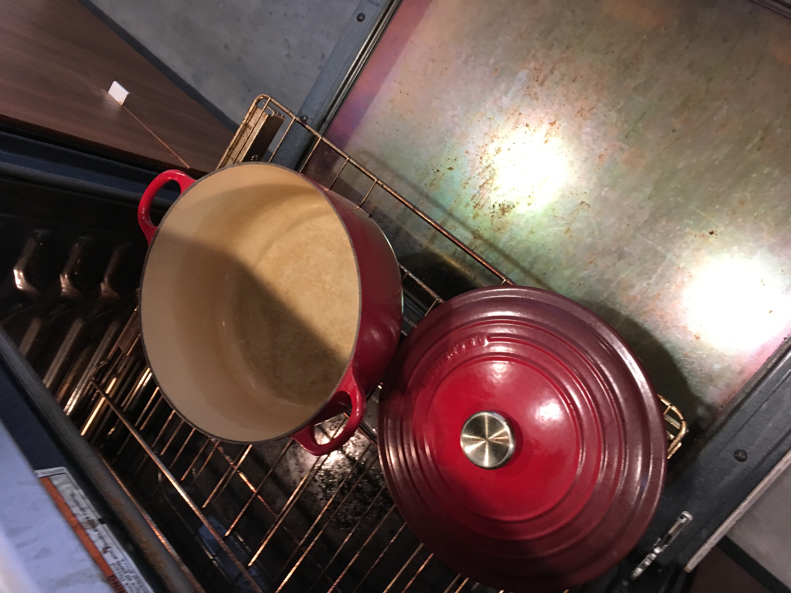 Put your heavy pot into the oven (with the lid) and preheat it to 450 degrees Fahrenheit. The timing of this step depends on how long your oven takes to preheat - just make sure the oven is ready by the time the dough will be ready.
- 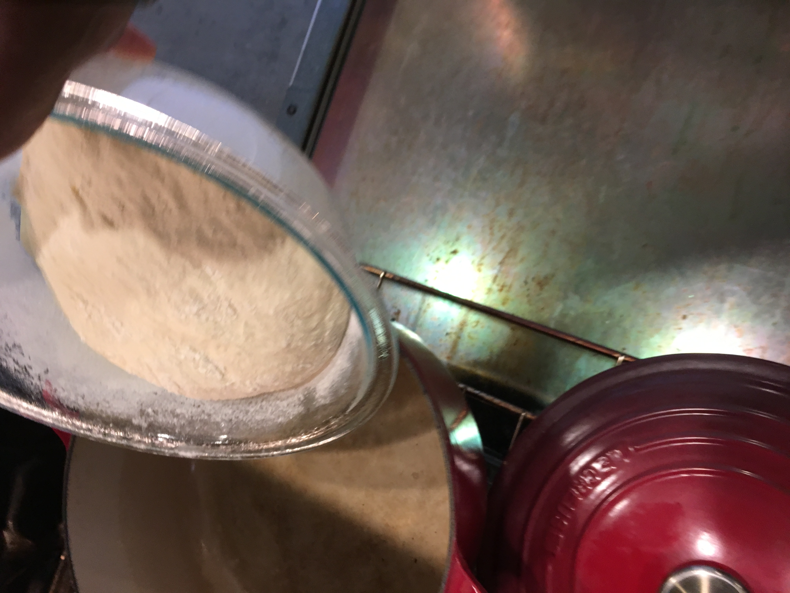 Open the oven, remove the pot lid, and pour the dough blob into the pot. It should land seam side up. If it doesn't land perfectly, don't stress about it too much. You can shake the pot around a little to shape the bread, but we're going for rustic here anyway.
- 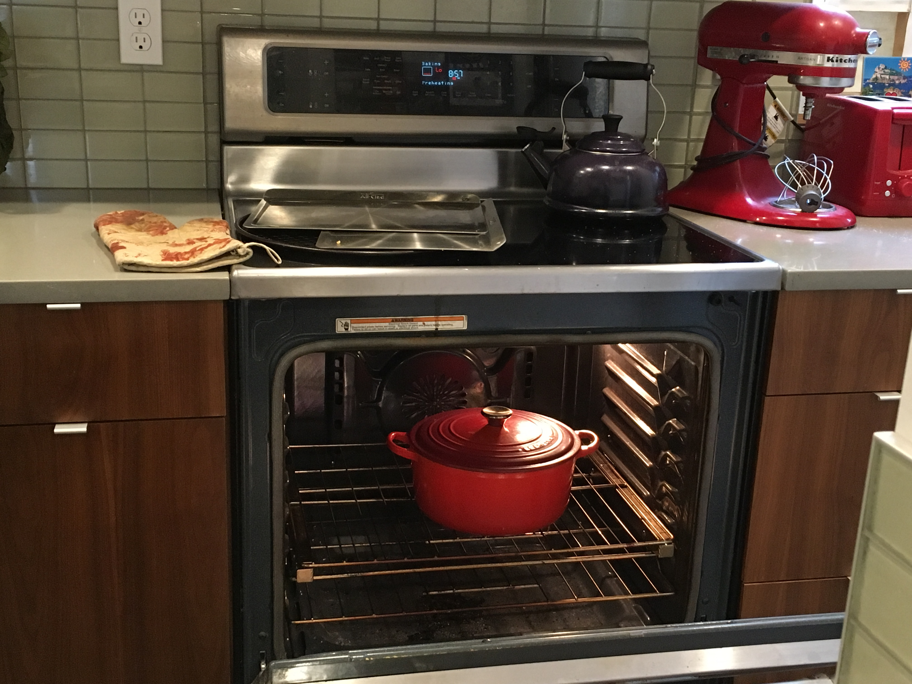 Put the lid on and bake for 30 minutes. Keeping the lid on the pot traps in steam as the bread bakes, which helps the crust develop more... crustiness. Professional bakeries use steam-injection ovens to achieve this effect.
- 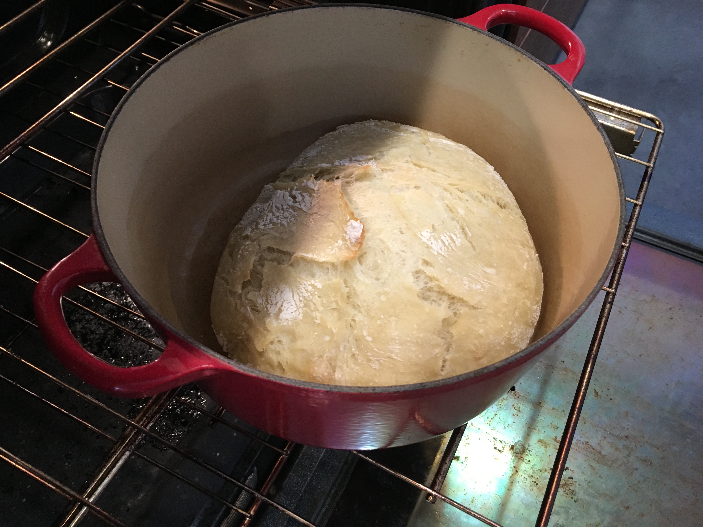 After 30 minutes, remove the lid and bake for an additional 15-20 minutes or until the crust is a dark golden brown.
- 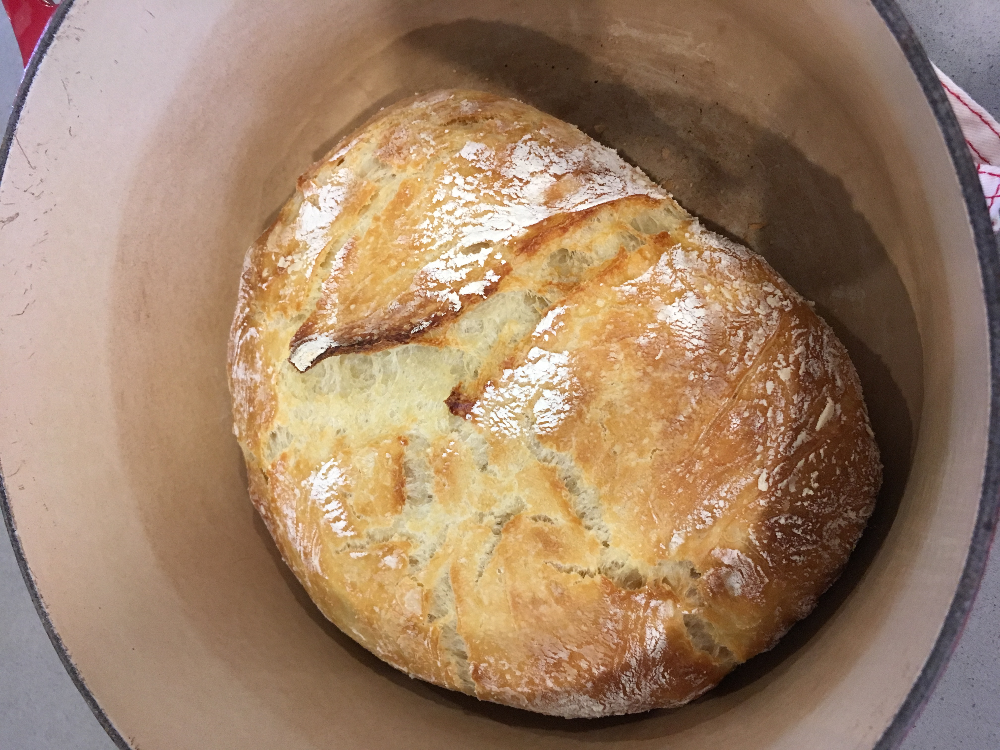 Take the pot out of the oven and carefully tip the bread out.
- 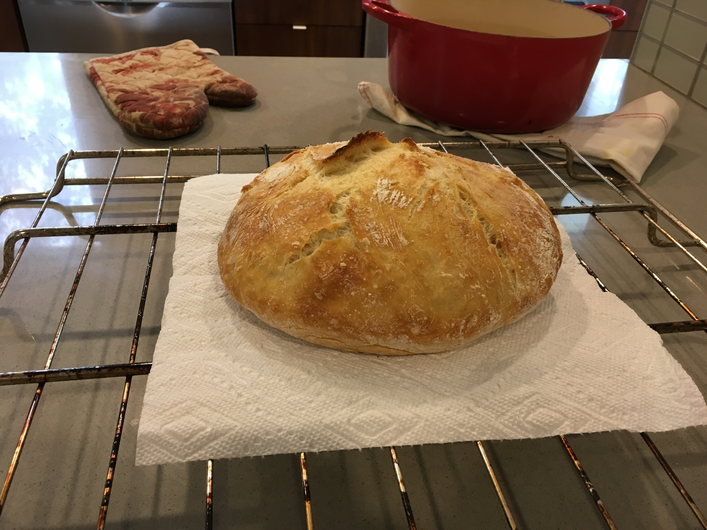 Let it cool on a rack for at least 30 minutes. As it cools, you'll hear lovely crackling noises!
The best way to store this bread is in a paper grocery bag. Enjoy!